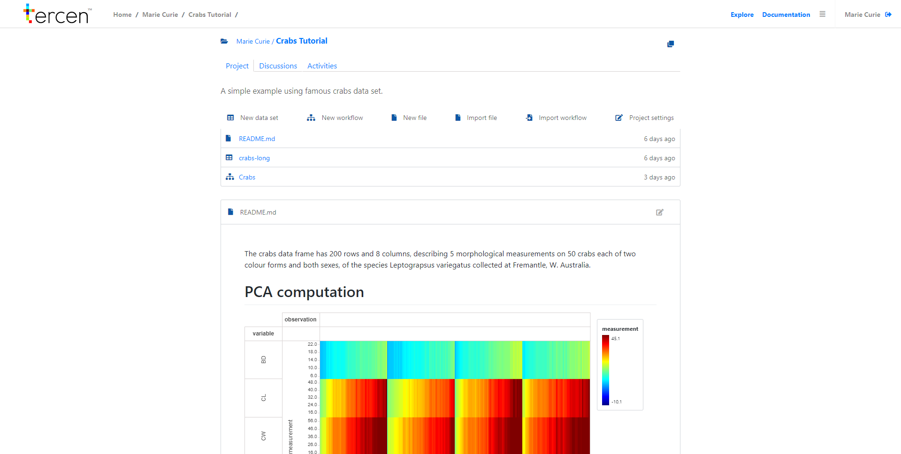
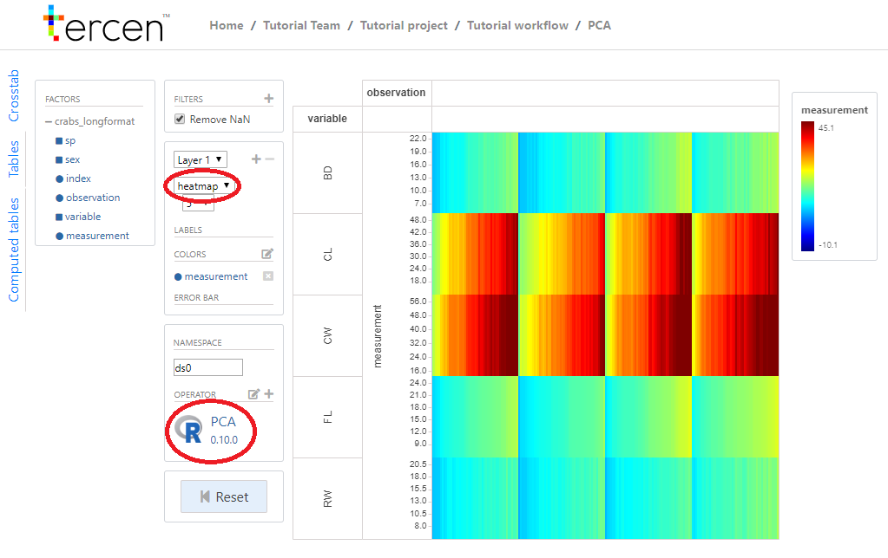

Chapter 7 View a workflow
In this section we walk you through the crabs project you just cloned in the prevous section.
You start off in your personal page, and you navigate to project.
Click on
Teams
Click on
Tutorial team
Click on
Tutorial project
You are now on the crabs project page and it looks like:

it contains the folllowing:
Project tab
- Data
- Workflow
Discussion tab
Activity tab
Click on
Tutorial workflow
The “crabs_longformat” is preloaded data, containing information about crabs. We performed a PCA on the data using one of our Operators. We call this a data step.
Doubleclick on
PCA
You can see that we visualised the data from the crabs_longformat table using heatmap. The __ PCA operator__ is shown on the left. The data produced by this data step can be visualized by adding another data step.Go back to the workflow main page by clicking on
Tutorial workflow
- Click on
PCA results
On the left side of the projection you can see the results of the PCA are available for visualization.
We visualized the data using PC1 and PC2, while coloring the species and sex of the crabs.
Thanks to the drag and drop way of working in tercen you can quickly and intuitively visualize the results of your data.
Your data can be visualized in many ways using tercen and every visualization can provide different insights. Next we will visualize the crabs_longformat using a pair-wise plot.
- Click on
Tutorial workflowto go back to the workflow page - Click on
Pair-wise plot
You will see the projection of the data step, as seen in the image below.

In this projection you can see that we visualized the differences between male and female, by coloring by sex.
In the columns you can appreciate that you can add multiple levels, differentiating between the species and the variables.
You now have an idea of the possibilities using tercen. For more information about how to upload and work with your own data, continue reading the getting started guide.